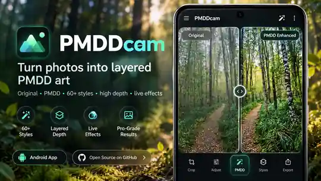

Non-destructive
Original bytes, depth map and recipe stay separate.
Turn photos into layered PMDD imagery locally on Android — with preserved originals, 80 styles and interactive depth.
PMDDcam 0.4.0 · · 239.7 MB · SHA-256

Original bytes, depth map and recipe stay separate.
Depth estimation, object detection and rendering run without uploads.
PMDD depth design plus an interactive 2.5D viewer.
SHA-256: SHA256SUMS.txt